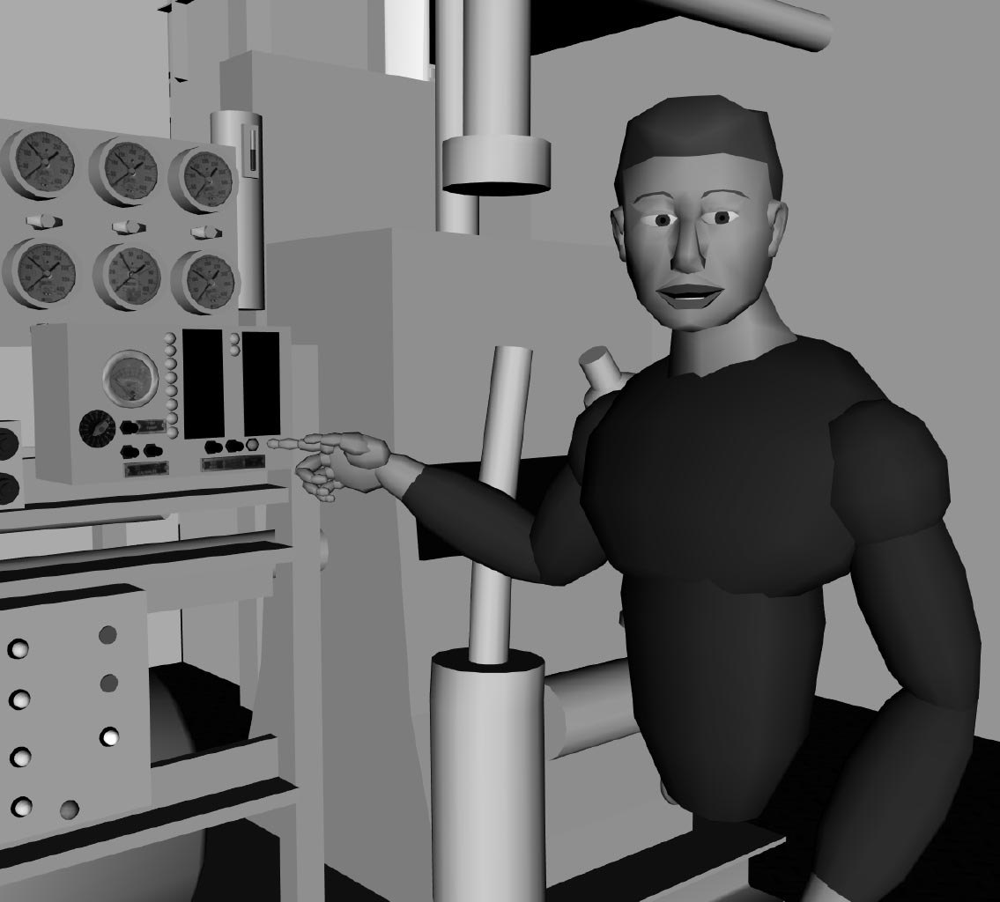
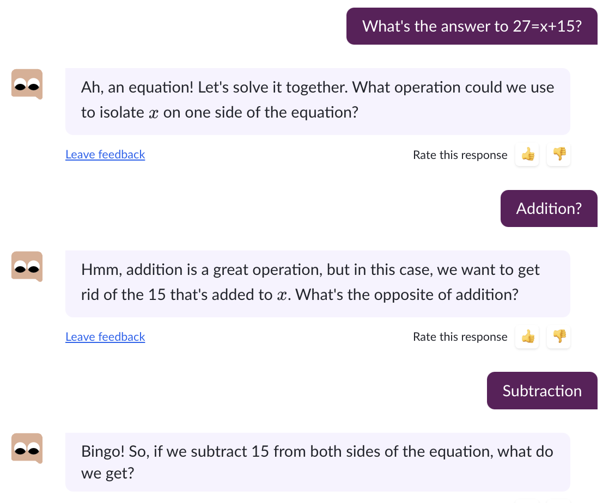
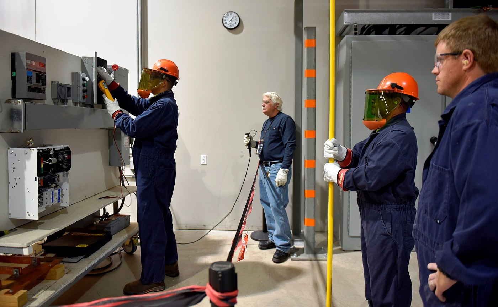

Bloom (1984): con un tutor personal, el estudiante promedio superó al 98 % de la clase convencional.
El problema: un tutor por estudiante no escala. ¿Puede un sistema hacer parte de ese trabajo?
Estudios posteriores encuentran efectos menores. Por ejemplo, 0.79 desviaciones estándar para la tutoría humana (VanLehn, 2011).
Sistemas tutoriales inteligentes
Un tutor inteligente tiene cuatro modelos
Dominio: las habilidades y los errores típicos.
Estudiante: una estimación incierta de lo que domina. Es el corazón del 7B.
Pedagógico: qué ejercicio, pista o explicación viene ahora.
Es el agente de la Sesión 1: percibe respuestas, estima un estado y actúa.
Diagrama propio, a partir de la arquitectura clásica que describe Woolf (2009), Building Intelligent Interactive Tutors.
¿Funcionan los tutores inteligentes?
La evidencia, con sus matices
Efecto frente a no tener tutoría (VanLehn, 2011), en desviaciones estándar
tutor humano0.79tutor paso a paso0.76tutor por subpasos0.40tutor de respuesta0.31
Cognitive Tutor de álgebra, en 147 colegios de 7 estados (Pane et al., 2014). Sin efecto el primer año; +0.21 desviaciones estándar el segundo, en bachillerato.
Bayesian Knowledge Tracing (Corbett y Anderson, 1994)
Lo que sabes es un estado oculto
Dos estados: domina o no domina la habilidad. Una vez aprendida, no se olvida.
Cada respuesta es evidencia imperfecta: se puede acertar sin saber y fallar sabiendo.
Diagrama propio del modelo de Corbett y Anderson (1994), User Modeling and User-Adapted Interaction 4.
El modelo del estudiante del Laboratorio 7B
Cuatro números describen al estudiante
Dominio inicial
0.10
con qué dominio llega el técnico · P(L₀)
Aprendizaje
0.12
cuánto aprende en cada práctica · P(T)
Adivinanza
0.15
cuánto acierta sin dominar · P(G)
Descuido
0.10
cuánto falla aunque domine · P(S)
Habilidad del ejemplo: Alineación de una bomba
Con cada respuesta, el tutor aplica la regla de Bayes y, después, le da una oportunidad de aprender.
Valores de una simulación con parámetros conocidos (ejemplos/bkt_7b.py). Los datos del 7B salen de una simulación: no hay personas reales.
Detalle: las ecuaciones de actualización
Consulta
Bayesian Knowledge Tracing
Las ecuaciones de actualización
Si la respuesta es correcta
Si la respuesta es incorrecta
La oportunidad de aprender
L es «domina la habilidad». G es la adivinanza, S el descuido y T el aprendizaje. Al inicio, P(L) = P(L₀).
Las dos primeras ecuaciones son la regla de Bayes. La tercera supone que no se olvida.
Así las escribe la literatura que sigue a Corbett y Anderson (1994).
Un técnico simulado, respuesta a respuesta
La curva de dominio
Alineación de una bomba, con los parámetros de la diapositiva anterior. Simulación con la semilla 7 (ejemplos/bkt_7b.py).
La planificación instruccional
Elegir el siguiente ejercicio
Mastery learning (avanzar solo cuando se domina): practicar cada habilidad hasta que el dominio estimado supere 0.95.
Es planificar, como en la Sesión 2: el plan se ajusta con cada respuesta.
Habilidad
Hasta dominar (0.95)
Siempre 5 ejercicios
Bloqueo y etiquetado
100 % dominan · 6.8 ejercicios
77 % dominan
Alineación de una bomba
96 % dominan · 10.3 ejercicios
52 % dominan
Lectura de vibración
97 % dominan · 8.8 ejercicios
60 % dominan
200 técnicos simulados por habilidad, con la semilla 7 (ejemplos/bkt_7b.py). El umbral de 0.95 es el que usaban Corbett y Anderson (1994).
Sistemas multiagente pedagógicos · panorama
Agentes pedagógicos animados
Personajes que demuestran, señalan y conversan dentro del entorno de aprendizaje (Johnson, Rickel y Lester, 2000).
Varios agentes se reparten el trabajo: el que explica, el que pregunta, el compañero que se equivoca a propósito.
Son los sistemas multiagente de la Sesión 1, aplicados a enseñar.

Steve, un agente que enseña a operar los equipos de un barco. Johnson, Rickel y Lester (2000), fig. 1; cita con fines educativos.
Tutores con LLMs
Qué cambia cuando el tutor conversa
El diálogo es en lenguaje natural. El LLM genera explicaciones, pistas y ejercicios nuevos.
Khanmigo, de Khan Academy, empezó como piloto el 14 de marzo de 2023. Su promesa: guiar sin dar la respuesta.
Construir un tutor así es tema de Agentes de IA y de PLN. Aquí interesa cómo razona sobre lo que sabes.

Khanmigo guía sin dar la respuesta. Khan Academy, blog (2024); cita con fines educativos.
La evidencia, con fuente primaria
El mismo GPT-4 puede dañar o ayudar: depende del diseño
Sin salvaguardas · Turquía, unos 1000 estudiantes
Con GPT-4 abierto, la práctica mejoró 48 %. En el examen sin acceso, las notas bajaron 17 %.
Con un tutor que daba pistas sin la solución, el daño desapareció.
Bastani et al. (2025), PNAS 122(26).
Diseñado con pedagogía · Harvard, 194 estudiantes
Un tutor de física con siete principios pedagógicos superó a la clase activa.
La ganancia mediana fue más del doble, en menos tiempo.
Kestin et al. (2025), Scientific Reports 15.
El contrapunto del Laboratorio 7B
El LLM conversa bien. ¿Estima bien lo que sabes?
La misma evidencia
El LLM y el modelo bayesiano leen las mismas secuencias de respuestas.
Tres criterios
Exactitud frente al estado simulado, consistencia entre corridas y la explicación.
El patrón del curso
El LLM conversa; un modelo auditable estima y decide cuándo avanzar.
En MantenIA · la formación corporativa
Formar a los técnicos nuevos
El problema de la Sesión 1: un técnico senior se jubila. La Sesión 6 aprendió sus reglas de los datos.
Se mide: las respuestas en ejercicios de bloqueo y etiquetado, alineación y lectura de vibración.
Se decide: qué practica cada técnico, y cuándo está listo para ir a la planta.
Supervisa: el técnico senior, que revisa antes de habilitar a alguien.

Capacitación de técnicos en una planta piloto. PEO ACWA (2017), Wikimedia Commons, CC BY 2.0.
Para llevar
El tutor que estima lo que sabes
Lo oculto cambia
Un modelo oculto de Márkov sigue un estado que no se ve.
El modelo del estudiante
Cuatro números y la regla de Bayes estiman el dominio, respuesta a respuesta.
El diseño importa
Un LLM sin diseño pedagógico puede dañar el aprendizaje.
A continuación · 60 min
Laboratorio 7B · Sistema tutorial inteligente: el modelo del estudiante
Bayesian Knowledge Tracing con técnicos simulados de un curso de formación corporativa. La regla para elegir el siguiente ejercicio. Y un LLM que estima el mismo dominio.
Cambiar
los cuatro parámetros, las respuestas y el umbral de dominio
Comparar
la estimación bayesiana con la de un LLM
Sin escribir código
notebook de configuración, en parejas
Referencias de la charla intermedia
Para profundizar
Russell, S. y Norvig, P. (2021). AIMA, 4.ª ed., cap. 14. · Rabiner, L. R. (1989). A tutorial on hidden Markov models and selected applications in speech recognition. Proceedings of the IEEE 77(2), 257–286. DOI
Bloom, B. S. (1984). The 2 sigma problem: the search for methods of group instruction as effective as one-to-one tutoring. Educational Researcher 13(6), 4–16. DOI (Wayback)
Woolf, B. P. (2009). Building Intelligent Interactive Tutors. Morgan Kaufmann. DOI
VanLehn, K. (2011). The relative effectiveness of human tutoring, intelligent tutoring systems, and other tutoring systems. Educational Psychologist 46(4), 197–221. DOI (Wayback)
Pane, J. F., Griffin, B. A., McCaffrey, D. F. y Karam, R. (2014). Effectiveness of Cognitive Tutor Algebra I at scale. Educational Evaluation and Policy Analysis 36(2), 127–144. DOI (Wayback) · resumen de RAND (copia en Wayback)
Johnson, W. L., Rickel, J. W. y Lester, J. C. (2000). Animated pedagogical agents: face-to-face interaction in interactive learning environments. IJAIED 11, 47–78. PDF
Bastani, H. et al. (2025). Generative AI without guardrails can harm learning: evidence from high school mathematics. PNAS 122(26), e2422633122. DOI (Wayback)
Kestin, G., Miller, K., Klales, A., Milbourne, T. y Ponti, G. (2025). AI tutoring outperforms in-class active learning. Scientific Reports 15, 17458. DOI
.jpg){kind=link}